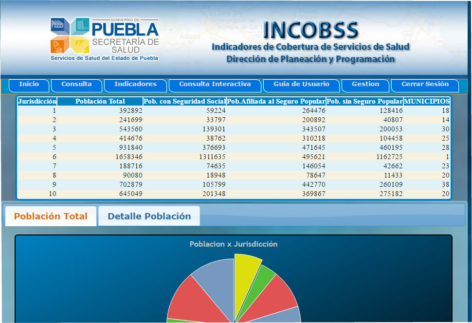
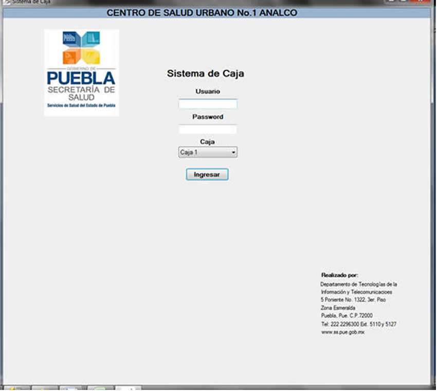

Curriculum

Nombre: Omar García
Email:
Programador, con experiencia en el desarrollo de aplicaciones web.
Apasiondo en el desarrollo de aplicaciones web y móvil.
Ingenieria en Tecnologias de la Información y Comunicación (Pasante)
Universidad Tecnologica de Puebla
Conocimientos
- PHP5, MYSQL, LARAVEL5, CODEIGNITER, COMPOSER, GIT
- HTML5, CSS3 (BOOTSTRAP 3), JAVASCRITP (JQUERY,AJAX)
- WordPress
- IONIC
- C#,SQL,CRYSTAL REPORTS
- PYTHON, DJANGO, PANDAS
Trabajos
Sistema de Nomina
Sistema desarrollado en laravel 5.4
Desarrollo y mantenimiento del sistema de nómina. Se desarrollo un sistema de nomina que sigue los estándares del SAT en su versión 3.3. Además de implementar un reloj chocador para l control del personal. Y agilizar el cálculo de nóminas, finiquitos, reparto de Utilidades.
Desarrollo y mantenimiento del sistema de nómina. Se desarrollo un sistema de nomina que sigue los estándares del SAT en su versión 3.3. Además de implementar un reloj chocador para l control del personal. Y agilizar el cálculo de nóminas, finiquitos, reparto de Utilidades.
Sistema SIAO
Sistema desarrollado en laravel 5.4
SIAO (Sistema Integral Académico Olmeca). Se desarrollaron dos sistemas (Olga Prieto y Ramón Galguera). Se crearon diversos módulos, entre los cuales participé desarrollando el modulo de caja, modulo calificaciones, ciclos escolares entre otros, trabajamos utilizando la metodología scrum y gitlab para administrar los proyectos. Logros: se logro implementar el sistema para agilizar el proceso de inscripción de los alumnos, tener un mejor control de los pagos, calificaciones, y comunicación con padres de familia.
SIAO (Sistema Integral Académico Olmeca). Se desarrollaron dos sistemas (Olga Prieto y Ramón Galguera). Se crearon diversos módulos, entre los cuales participé desarrollando el modulo de caja, modulo calificaciones, ciclos escolares entre otros, trabajamos utilizando la metodología scrum y gitlab para administrar los proyectos. Logros: se logro implementar el sistema para agilizar el proceso de inscripción de los alumnos, tener un mejor control de los pagos, calificaciones, y comunicación con padres de familia.
Sistema Incobss

Desarrollo del sistema Incobss, en los servicios de salud del estado de
Puebla. Utilizando las tecnologias PHP, Mysql, Highchart, tcpdf.
Sistema de Cobro

Desarrollo Sistema de Cobros, en los Centro de Salud Analco. Utilizando las tecnologias c#,sql server,crystal reports.